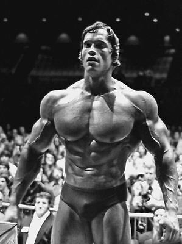

HTML
“Training gives us an outlet for suppressed energies
created by stress and thus tones the spirit just as
exercise conditions the body.”
Arnold Schwarzenegger

1. “Strength does not come from the physical capacity. It comes from an indomitable will.”
- 힘은 물리적인 능력에서 나오는 것이 아니고, 꺽을 수 없는 의지에서 나온다.
2. “Training gives us an outlet for suppressed energies created by stress and thus tones the spirit just as exercise conditions the body.” – Arnold Schwarzenegger
- 트레이닝은 스트레스로부터 억눌린 에너지를 분출할 수 있게 한다. 그러므로 운동이 몸을 건강하게 하듯이 정신 역시 건강하게 한다.
3. “Your body can stand almost anything. It’s your mind that you have to convince.”
- 너의 몸은 거의 모든 것을 버틸 수 있다. 너의 정신력을 믿으면 된다.
4. “Fitness is like a relationship. You can’t cheat and expect it to work.”
- 피트니스는 관계와 같다. 너가 치팅(배신)을 하면서 그게 효과가 있을거라고 바라면 안 되지.
5. “Respect your body. It’s the only one you get.”
- 너의 몸을 존중해라. 너가 가진 유일한 것이다.
6. “Dead last finish is greater than did not finish, which trumps did not start.”
- 마지막 마무리는 끝내지 않은것보다 낫고, 끝내지 않은 건 시작조차 하지않은 것보다 낫다.
7. “The best way to predict the future is to create it.” – Abraham Lincoln
- 미래를 예상하는 가장 좋은 방법은 직접 미래를 만드는 것이지
8. “Work hard in silence. Let success be your noise.” – Frank Ocean
- 조용히 열심히 해라. 그리고 성공을 시끄럽게 두면 된다.
9. “Rome wasn’t built in a day, but they worked on it every single day.”
- 로마는 하루만에 이뤄진 것이 아니다. 그러나 매일이 이룬 것이지.
10. “Use the 21/90 rule: It takes 21 days to create a habit. It takes 90 days to create a lifestyle.”
- 21/90 의 법칙을 사용하라 : 습관을 만드는데 21일이 걸리고, 라이프스타일이 되는데까지 90일이 걸린다.
11. “Strive for progress, not perfection.”
- 완벽을 바라지 말고, 진전을 바라고 노력하라.
12. “The difference between try and triumph is a little umph.” – Marvin Phillips
- 노력과 성공의 차이는 매우 작은 비명소리(노력)이지.